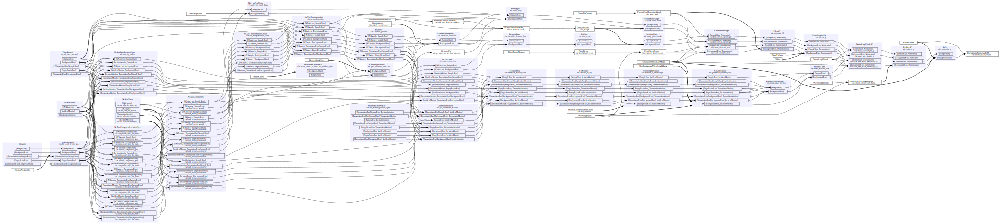
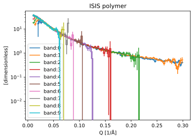
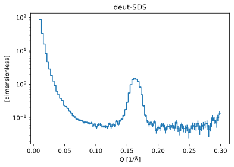

LoKI: data reduction from Larmor detector test#
This notebook shows how to use the LokiAtLarmorWorkflow to reduce data acquired during the 2022 LoKI detector test at Larmor.
We will set up a standard workflow that computes a one-dimensional \(I(Q)\) from the raw data, and reuse the workflow for 4 different samples:
[1]:
import scipp as sc
import plopp as pp
from ess import sans
from ess import loki
import ess.loki.data # noqa: F401
from ess.sans.types import *
Create and configure the workflow#
We begin by creating the Loki workflow object:
[2]:
workflow = loki.LokiAtLarmorWorkflow()
# Load masks from files
workflow = sans.with_pixel_mask_filenames(
workflow, masks=loki.data.loki_tutorial_mask_filenames()
)
# Set detector bank name: in this case there is only one bank
workflow[NeXusDetectorName] = "larmor_detector"
# Wavelength and Q binning parameters
workflow[WavelengthBins] = sc.linspace("wavelength", 1.0, 13.0, 201, unit="angstrom")
workflow[QBins] = sc.linspace(dim="Q", start=0.01, stop=0.3, num=101, unit="1/angstrom")
# Other parameters
workflow[CorrectForGravity] = True
workflow[UncertaintyBroadcastMode] = UncertaintyBroadcastMode.upper_bound
workflow[ReturnEvents] = False
File common to all runs#
We set files that are common to all sample runs, namely the background, empty beam and direct beam files:
[3]:
workflow[Filename[BackgroundRun]] = loki.data.loki_tutorial_background_run_60393()
workflow[Filename[TransmissionRun[BackgroundRun]]] = loki.data.loki_tutorial_run_60392()
workflow[Filename[EmptyBeamRun]] = loki.data.loki_tutorial_run_60392()
workflow[DirectBeamFilename] = loki.data.loki_tutorial_direct_beam_all_pixels()
Downloading file 'direct-beam-loki-all-pixels.h5' from 'https://public.esss.dk/groups/scipp/ess/loki/2/direct-beam-loki-all-pixels.h5' to '/home/runner/.cache/ess/loki'.
ISIS Polymer sample#
We configure the files to load
[4]:
workflow[Filename[SampleRun]] = loki.data.loki_tutorial_isis_polymer_sample_run()
workflow[Filename[TransmissionRun[SampleRun]]] = (
loki.data.loki_tutorial_isis_polymer_transmission_run()
)
Downloading file '60395-2022-02-28_2215.nxs' from 'https://public.esss.dk/groups/scipp/ess/loki/2/60395-2022-02-28_2215.nxs' to '/home/runner/.cache/ess/loki'.
Computing the beam center#
We use a center-of-mass approach to find the beam center:
[5]:
center = sans.beam_center_from_center_of_mass(workflow)
center
[5]:
scipp.Variable (336 Bytes)
- ()vector3m[-0.02864121 -0.01850989 0. ]
Values:
array([-0.02864121, -0.01850989, 0. ])
and set that value in our workflow
[6]:
workflow[BeamCenter] = center
Visualizing the workflow#
It is always a good idea to visualize the workflow graph, as a sanity check.
[7]:
workflow.visualize(BackgroundSubtractedIofQ, compact=True, graph_attr={"rankdir": "LR"})
[7]:

Intermediate result: transmission fraction#
[8]:
tf = workflow.compute(TransmissionFraction[SampleRun])
tf.plot()
[8]:
Compute I(Q)#
[9]:
da = workflow.compute(BackgroundSubtractedIofQ)
da.plot(norm="log", title="ISIS polymer")
[9]:
Wavelength bands#
[10]:
workflow[WavelengthBands] = sc.linspace("wavelength", 1.0, 13.0, 11, unit="angstrom")
da_bands = workflow.compute(BackgroundSubtractedIofQ)
da_bands
[10]:
scipp.DataArray (11.12 KB)
- band: 10
- Q: 100
- L1()float64m25.610000610351562
Values:
array(25.61000061) - Q(Q [bin-edge])float641/Å0.01, 0.013, ..., 0.297, 0.3
Values:
array([0.01 , 0.0129, 0.0158, 0.0187, 0.0216, 0.0245, 0.0274, 0.0303, 0.0332, 0.0361, 0.039 , 0.0419, 0.0448, 0.0477, 0.0506, 0.0535, 0.0564, 0.0593, 0.0622, 0.0651, 0.068 , 0.0709, 0.0738, 0.0767, 0.0796, 0.0825, 0.0854, 0.0883, 0.0912, 0.0941, 0.097 , 0.0999, 0.1028, 0.1057, 0.1086, 0.1115, 0.1144, 0.1173, 0.1202, 0.1231, 0.126 , 0.1289, 0.1318, 0.1347, 0.1376, 0.1405, 0.1434, 0.1463, 0.1492, 0.1521, 0.155 , 0.1579, 0.1608, 0.1637, 0.1666, 0.1695, 0.1724, 0.1753, 0.1782, 0.1811, 0.184 , 0.1869, 0.1898, 0.1927, 0.1956, 0.1985, 0.2014, 0.2043, 0.2072, 0.2101, 0.213 , 0.2159, 0.2188, 0.2217, 0.2246, 0.2275, 0.2304, 0.2333, 0.2362, 0.2391, 0.242 , 0.2449, 0.2478, 0.2507, 0.2536, 0.2565, 0.2594, 0.2623, 0.2652, 0.2681, 0.271 , 0.2739, 0.2768, 0.2797, 0.2826, 0.2855, 0.2884, 0.2913, 0.2942, 0.2971, 0.3 ]) - incident_beam()vector3m[ 0. 0. 25.61000061]
Values:
array([ 0. , 0. , 25.61000061]) - sample_position()vector3m[0. 0. 0.]
Values:
array([0., 0., 0.]) - source_position()vector3m[ 0. 0. -25.61000061]
Values:
array([ 0. , 0. , -25.61000061]) - wavelength(wavelength [bin-edge], band)float64Å1.0, 2.2, ..., 11.800, 13.0
Values:
array([[ 1. , 2.2, 3.4, 4.6, 5.8, 7. , 8.2, 9.4, 10.6, 11.8], [ 2.2, 3.4, 4.6, 5.8, 7. , 8.2, 9.4, 10.6, 11.8, 13. ]])
- (band, Q)float32𝟙nan, nan, ..., nan, nanσ = nan, nan, ..., nan, nan
Values:
array([[ nan, nan, nan, 16.498554 , 22.03877 , 18.144753 , 19.77915 , 18.301622 , 16.09548 , 15.046941 , 13.772168 , 12.483344 , 11.029077 , 9.595518 , 9.074957 , 8.517315 , 7.7743254 , 7.2002525 , 6.303477 , 5.6797647 , 5.3551106 , 4.918209 , 4.677788 , 4.3118553 , 4.250331 , 3.5744076 , 3.6266332 , 3.6057808 , 3.2159753 , 2.9583995 , 2.85916 , 2.7116146 , 2.314634 , 2.1628356 , 2.3555186 , 2.2522283 , 2.0228667 , 1.964533 , 1.8187557 , 1.8704543 , 1.6520243 , 1.7082405 , 1.4324958 , 1.6213167 , 1.5083147 , 1.5743253 , 1.3733706 , 1.4291272 , 1.2758293 , 1.2886342 , 1.2935892 , 1.1102705 , 1.1351321 , 1.1272362 , 1.0824966 , 1.0580165 , 0.9360758 , 1.122127 , 0.82690275, 0.9673933 , 0.9352398 , 0.7904505 , 0.7767739 , 0.78703344, 0.78699005, 0.8018871 , 0.66917473, 0.6995284 , 0.722801 , 0.73345387, 0.6573347 , 0.6667191 , 0.65287876, 0.6013578 , 0.5774253 , 0.61284256, 0.5769481 , 0.571553 , 0.5561032 , 0.56240165, 0.5350077 , 0.44995785, 0.5557416 , 0.5183371 , 0.5592329 , 0.51910126, 0.46053445, 0.46901828, 0.49248704, 0.49375892, 0.5125013 , 0.5181372 , 0.42628056, 0.4341445 , 0.39038756, 0.41769513, 0.4166556 , 0.49408832, 0.31573722, 0.4108131 ], [ nan, 15.614047 , 21.428892 , 23.977348 , 24.725563 , 23.202833 , 21.900478 , 20.155891 , 17.526497 , 15.486251 , 14.04802 , 12.675447 , 10.8612385 , 10.187511 , 9.302666 , 8.299561 , 7.595243 , 6.8958235 , 6.3311024 , 5.8269243 , 5.31479 , 5.100129 , 4.729024 , 4.4383125 , 4.133469 , 3.7978227 , 3.665327 , 3.3618834 , 3.1310046 , 2.965422 , 2.8001823 , 2.665258 , 2.6134233 , 2.4364333 , 2.3499901 , 2.1971107 , 2.1071372 , 1.9657588 , 1.8982953 , 1.8610744 , 1.7295455 , 1.7083342 , 1.584945 , 1.5413234 , 1.4549319 , 1.4341471 , 1.2939454 , 1.2933041 , 1.3317852 , 1.1871632 , 1.2219687 , 1.1617064 , 1.1039405 , 1.06917 , 1.0651119 , 1.0324172 , 0.99374896, 0.96932477, 0.9332259 , 0.9088961 , 0.8802868 , 0.88077104, 0.8207948 , 0.7895792 , 0.8342074 , 0.76388055, 0.79792523, 0.77855587, 0.71993345, 0.6988931 , 0.6765426 , 0.70153445, 0.709234 , 0.67300606, 0.6125371 , 0.69973993, 0.6253826 , 0.6252858 , 0.6383145 , 0.60474783, 0.6554094 , 0.58374673, 0.5779102 , 0.51224613, 0.5221791 , 0.487709 , 0.45309797, 0.3616395 , 0.4891572 , 0.47841412, 0.55166423, 0.45731097, 0.4205565 , 0.55336666, 0.52639866, 0.3025086 , 0.2136294 , 0.3551966 , 0.49634615, 0.52362806], [18.270077 , 23.646338 , 30.00351 , 29.884922 , 27.554354 , 24.2386 , 22.10438 , 19.381857 , 17.602573 , 15.327395 , 13.452604 , 12.613775 , 11.202464 , 10.214075 , 9.003089 , 8.217347 , 7.534762 , 6.9285545 , 6.3605466 , 5.7665586 , 5.463199 , 4.9171114 , 4.575467 , 4.2486405 , 4.009794 , 3.7460122 , 3.6154964 , 3.340802 , 3.131535 , 3.023417 , 2.8177652 , 2.7751353 , 2.5480216 , 2.402505 , 2.291049 , 2.1704957 , 2.0578716 , 1.9641644 , 1.9090726 , 1.8108426 , 1.7666879 , 1.6171775 , 1.7159432 , 1.52451 , 1.464568 , 1.4866716 , 1.377004 , 1.3600427 , 1.2634621 , 1.2042112 , 1.3019496 , 1.2295935 , 1.0428252 , 1.164818 , 1.0411378 , 1.0709895 , 1.0314896 , 1.0336883 , 1.0094591 , 0.75274086, 1.041449 , 0.7990785 , 1.0062538 , 0.9636973 , 0.9293953 , 0.5872571 , 0.73471963, 0.47189522, 0.65595937, 0.6793336 , 0.8393278 , 0. , nan, nan, nan, nan, nan, nan, nan, nan, nan, nan, nan, nan, nan, nan, nan, nan, nan, nan, nan, nan, nan, nan, nan, nan, nan, nan, nan, nan], [26.22236 , 34.080795 , 33.656803 , 29.778631 , 27.053778 , 24.07045 , 21.676239 , 19.150822 , 17.21855 , 15.340007 , 13.70343 , 12.659902 , 10.977159 , 9.913331 , 9.033146 , 8.373644 , 7.4583254 , 6.926276 , 6.330674 , 5.853978 , 5.3743625 , 4.977142 , 4.6558633 , 4.3892593 , 4.1681337 , 3.7471626 , 3.6686234 , 3.353136 , 3.218143 , 2.996705 , 2.885566 , 2.7119076 , 2.6089816 , 2.2634292 , 2.3746216 , 2.1377032 , 2.2307296 , 1.9642634 , 1.9316655 , 1.7898605 , 1.6640713 , 1.8990364 , 1.5980707 , 1.9001255 , 1.4502964 , 1.3384821 , 1.5960914 , 0.9666515 , 1.5100173 , 1.3976538 , 0.69457626, 1.5561328 , 0. , nan, nan, nan, nan, nan, nan, nan, nan, nan, nan, nan, nan, nan, nan, nan, nan, nan, nan, nan, nan, nan, nan, nan, nan, nan, nan, nan, nan, nan, nan, nan, nan, nan, nan, nan, nan, nan, nan, nan, nan, nan, nan, nan, nan, nan, nan, nan], [34.733936 , 36.154076 , 32.49664 , 30.656942 , 26.742035 , 24.233747 , 22.073801 , 19.354525 , 17.348988 , 15.624532 , 13.766566 , 12.338172 , 11.26941 , 10.485272 , 9.219593 , 8.4426365 , 7.8324814 , 7.4495144 , 6.4842486 , 6.2015395 , 5.855372 , 5.553704 , 5.111838 , 4.4047713 , 4.26138 , 3.9998047 , 3.6194472 , 3.2301602 , 3.1570487 , 3.0243287 , 3.2177436 , 2.7934213 , 2.6810668 , 2.5029414 , 2.5179653 , 1.9542639 , 1.5509299 , 1.6113038 , 1.6823893 , 0.595544 , 0. , nan, nan, nan, nan, nan, nan, nan, nan, nan, nan, nan, nan, nan, nan, nan, nan, nan, nan, nan, nan, nan, nan, nan, nan, nan, nan, nan, nan, nan, nan, nan, nan, nan, nan, nan, nan, nan, nan, nan, nan, nan, nan, nan, nan, nan, nan, nan, nan, nan, nan, nan, nan, nan, nan, nan, nan, nan, nan, nan], [38.108475 , 34.738777 , 32.427685 , 28.459803 , 27.37966 , 23.534328 , 21.049917 , 19.041897 , 16.901348 , 15.205222 , 14.077536 , 11.905102 , 11.274114 , 10.208785 , 9.189215 , 8.218592 , 7.444044 , 6.6681337 , 6.418974 , 5.6865067 , 5.4839616 , 5.156853 , 5.0491624 , 4.368853 , 4.251303 , 3.8902192 , 3.7501328 , 3.5654254 , 3.583549 , 2.8615003 , 3.3546686 , 2.72656 , 5.149181 , 0. , nan, nan, nan, nan, nan, nan, nan, nan, nan, nan, nan, nan, nan, nan, nan, nan, nan, nan, nan, nan, nan, nan, nan, nan, nan, nan, nan, nan, nan, nan, nan, nan, nan, nan, nan, nan, nan, nan, nan, nan, nan, nan, nan, nan, nan, nan, nan, nan, nan, nan, nan, nan, nan, nan, nan, nan, nan, nan, nan, nan, nan, nan, nan, nan, nan, nan], [37.72267 , 34.860878 , 29.374023 , 29.649258 , 25.04075 , 23.872423 , 21.368666 , 18.93073 , 16.644382 , 15.144709 , 13.452746 , 11.665393 , 11.274928 , 10.048433 , 8.926835 , 7.7726517 , 7.4531 , 6.8853445 , 5.7375927 , 6.3014917 , 5.6354127 , 5.0291567 , 4.715703 , 4.5593204 , 4.5669394 , 2.0183043 , 5.7967467 , 0. , nan, nan, nan, nan, nan, nan, nan, nan, nan, nan, nan, nan, nan, nan, nan, nan, nan, nan, nan, nan, nan, nan, nan, nan, nan, nan, nan, nan, nan, nan, nan, nan, nan, nan, nan, nan, nan, nan, nan, nan, nan, nan, nan, nan, nan, nan, nan, nan, nan, nan, nan, nan, nan, nan, nan, nan, nan, nan, nan, nan, nan, nan, nan, nan, nan, nan, nan, nan, nan, nan, nan, nan], [37.621502 , 34.127785 , 31.632088 , 28.462576 , 26.319082 , 24.416359 , 21.07696 , 18.90907 , 16.899208 , 15.154028 , 13.7943945 , 12.346458 , 11.62305 , 10.361106 , 8.747904 , 8.548429 , 7.90811 , 7.4801593 , 6.982302 , 5.569559 , 6.2166324 , 5.9329667 , 2.2388153 , 17.643854 , nan, nan, nan, nan, nan, nan, nan, nan, nan, nan, nan, nan, nan, nan, nan, nan, nan, nan, nan, nan, nan, nan, nan, nan, nan, nan, nan, nan, nan, nan, nan, nan, nan, nan, nan, nan, nan, nan, nan, nan, nan, nan, nan, nan, nan, nan, nan, nan, nan, nan, nan, nan, nan, nan, nan, nan, nan, nan, nan, nan, nan, nan, nan, nan, nan, nan, nan, nan, nan, nan, nan, nan, nan, nan, nan, nan], [37.103283 , 33.683205 , 28.856398 , 28.455183 , 24.813055 , 23.919529 , 21.362164 , 18.474102 , 16.803345 , 15.773205 , 13.38567 , 11.221708 , 10.881648 , 10.37097 , 9.122548 , 9.256982 , 8.296889 , 6.5425 , 4.708054 , 9.715418 , 9.274822 , nan, nan, nan, nan, nan, nan, nan, nan, nan, nan, nan, nan, nan, nan, nan, nan, nan, nan, nan, nan, nan, nan, nan, nan, nan, nan, nan, nan, nan, nan, nan, nan, nan, nan, nan, nan, nan, nan, nan, nan, nan, nan, nan, nan, nan, nan, nan, nan, nan, nan, nan, nan, nan, nan, nan, nan, nan, nan, nan, nan, nan, nan, nan, nan, nan, nan, nan, nan, nan, nan, nan, nan, nan, nan, nan, nan, nan, nan, nan], [37.367237 , 34.050106 , 32.491924 , 28.51312 , 26.642475 , 22.851746 , 21.92655 , 18.289907 , 17.39823 , 14.47427 , 13.920855 , 12.223945 , 10.504754 , 9.472872 , 9.578261 , 10.427909 , 7.7673616 , 4.3008933 , 0. , nan, nan, nan, nan, nan, nan, nan, nan, nan, nan, nan, nan, nan, nan, nan, nan, nan, nan, nan, nan, nan, nan, nan, nan, nan, nan, nan, nan, nan, nan, nan, nan, nan, nan, nan, nan, nan, nan, nan, nan, nan, nan, nan, nan, nan, nan, nan, nan, nan, nan, nan, nan, nan, nan, nan, nan, nan, nan, nan, nan, nan, nan, nan, nan, nan, nan, nan, nan, nan, nan, nan, nan, nan, nan, nan, nan, nan, nan, nan, nan, nan]], dtype=float32)
Variances (σ²):
array([[ nan, nan, nan, 1.38169098e+02, 1.35484085e+01, 3.64025712e+00, 2.18506432e+00, 1.35300922e+00, 8.59074891e-01, 6.63835347e-01, 5.16113639e-01, 3.99243861e-01, 3.09626400e-01, 2.32294112e-01, 2.03393847e-01, 1.77975744e-01, 1.48668438e-01, 1.28803968e-01, 1.02423027e-01, 8.50298405e-02, 7.59012997e-02, 6.57269806e-02, 5.89706078e-02, 5.22926301e-02, 5.02162576e-02, 3.87136005e-02, 3.81159633e-02, 3.69475931e-02, 3.09219025e-02, 2.64972020e-02, 2.52692532e-02, 2.26610135e-02, 1.83537118e-02, 1.60335265e-02, 1.81159042e-02, 1.65723134e-02, 1.40322829e-02, 1.35565661e-02, 1.18881287e-02, 1.21301347e-02, 1.03053171e-02, 1.05648767e-02, 8.39531515e-03, 9.44469031e-03, 8.40093754e-03, 8.94227624e-03, 7.25141726e-03, 7.55053340e-03, 6.45099999e-03, 6.48732577e-03, 6.34379825e-03, 5.44769829e-03, 5.31860394e-03, 5.17733209e-03, 4.94596548e-03, 4.74553136e-03, 3.90956365e-03, 4.93221916e-03, 3.32281459e-03, 4.09323256e-03, 3.86036723e-03, 3.14914063e-03, 2.95548071e-03, 3.05214152e-03, 2.92129186e-03, 3.03624501e-03, 2.57557142e-03, 2.58336635e-03, 2.58220360e-03, 2.74822908e-03, 2.30463617e-03, 2.44353106e-03, 2.37762718e-03, 2.15879246e-03, 2.07314361e-03, 2.21667672e-03, 2.01060297e-03, 2.04529171e-03, 1.96462078e-03, 1.96440914e-03, 1.87956402e-03, 1.78791827e-03, 1.95776531e-03, 1.94851996e-03, 2.12227367e-03, 1.97004993e-03, 1.79265859e-03, 1.77326123e-03, 1.87964120e-03, 1.87013962e-03, 1.93164416e-03, 2.18114723e-03, 1.78091286e-03, 1.82338001e-03, 1.63587451e-03, 1.84792804e-03, 1.85838516e-03, 2.18017353e-03, 1.51539966e-03, 1.93400471e-03], [ nan, 4.31191492e+00, 9.76314843e-01, 5.49028993e-01, 3.94757897e-01, 2.87499994e-01, 2.35408828e-01, 1.96453005e-01, 1.49935693e-01, 1.17798984e-01, 9.75612998e-02, 8.01029429e-02, 6.01775236e-02, 5.31036928e-02, 4.47125323e-02, 3.61025110e-02, 3.06246467e-02, 2.56165154e-02, 2.18348950e-02, 1.87386982e-02, 1.59360468e-02, 1.46744801e-02, 1.27762686e-02, 1.13541652e-02, 9.93919466e-03, 8.57039075e-03, 7.99262896e-03, 6.88297907e-03, 6.05901517e-03, 5.54076442e-03, 4.95609501e-03, 4.54202248e-03, 4.37445100e-03, 3.89181077e-03, 3.59422551e-03, 3.21083982e-03, 2.97943340e-03, 2.63723498e-03, 2.49901251e-03, 2.39343988e-03, 2.12709745e-03, 2.07168749e-03, 1.83590606e-03, 1.74556579e-03, 1.60703226e-03, 1.55892351e-03, 1.34235003e-03, 1.34185015e-03, 1.40495820e-03, 1.18799019e-03, 1.25358545e-03, 1.17413176e-03, 1.11343339e-03, 1.06590148e-03, 1.07524765e-03, 1.04454183e-03, 1.01166638e-03, 9.95552749e-04, 9.74646886e-04, 9.78586846e-04, 9.61358834e-04, 9.67727276e-04, 9.34227952e-04, 9.30195849e-04, 1.01509260e-03, 9.83500853e-04, 1.06429402e-03, 1.09147991e-03, 1.05616753e-03, 1.09606714e-03, 1.10326998e-03, 1.22322771e-03, 1.32415979e-03, 1.30614534e-03, 1.31740980e-03, 1.53745105e-03, 1.54719257e-03, 1.65210559e-03, 1.83108600e-03, 1.80146121e-03, 2.22112006e-03, 2.10560206e-03, 2.26951344e-03, 2.24092463e-03, 2.58429302e-03, 2.62452452e-03, 2.82284850e-03, 2.64519593e-03, 3.91416764e-03, 4.56960034e-03, 5.07314410e-03, 4.82623838e-03, 5.00994222e-03, 7.75514217e-03, 9.53060575e-03, 7.19146477e-03, 5.87424124e-03, 9.88178141e-03, 1.90834813e-02, 2.16085967e-02], [1.95580435e+00, 6.41512394e-01, 5.86823106e-01, 5.06498754e-01, 4.24947709e-01, 3.28853548e-01, 2.72902966e-01, 2.11486131e-01, 1.74859509e-01, 1.34416640e-01, 1.04561992e-01, 9.19023454e-02, 7.33753070e-02, 6.15201704e-02, 4.84212711e-02, 4.08005752e-02, 3.46879214e-02, 2.95801200e-02, 2.52422970e-02, 2.10925285e-02, 1.90034527e-02, 1.57109275e-02, 1.37061337e-02, 1.19887581e-02, 1.07379556e-02, 9.51602124e-03, 8.85299221e-03, 7.69143598e-03, 6.84309378e-03, 6.45116251e-03, 5.65468706e-03, 5.53867128e-03, 4.79454920e-03, 4.37267451e-03, 4.07283241e-03, 3.78629891e-03, 3.53811565e-03, 3.37472046e-03, 3.26163275e-03, 3.07684066e-03, 3.03838518e-03, 2.72946362e-03, 3.08941025e-03, 2.73178564e-03, 2.71844049e-03, 2.92230654e-03, 2.80446000e-03, 2.96850759e-03, 2.94844690e-03, 2.95293517e-03, 3.62573587e-03, 3.71962576e-03, 3.39780003e-03, 4.26899595e-03, 4.37228614e-03, 5.23131806e-03, 5.85266994e-03, 7.01261591e-03, 8.35866481e-03, 7.49922171e-03, 1.23499688e-02, 1.12942951e-02, 1.97618622e-02, 2.36766823e-02, 3.08697410e-02, 2.53793355e-02, 4.63242456e-02, 4.52126861e-02, 1.09174550e-01, 2.33033359e-01, 7.09730029e-01, 0.00000000e+00, nan, nan, nan, nan, nan, nan, nan, nan, nan, nan, nan, nan, nan, nan, nan, nan, nan, nan, nan, nan, nan, nan, nan, nan, nan, nan, nan, nan], [9.14153218e-01, 9.40065265e-01, 8.69568884e-01, 6.76885903e-01, 5.53954303e-01, 4.40456808e-01, 3.55843604e-01, 2.78890580e-01, 2.27060333e-01, 1.81326330e-01, 1.45897672e-01, 1.24477692e-01, 9.49732438e-02, 7.83858225e-02, 6.53403401e-02, 5.64673021e-02, 4.54048812e-02, 3.95412408e-02, 3.34357284e-02, 2.86961440e-02, 2.45281141e-02, 2.12401599e-02, 1.87223591e-02, 1.67877004e-02, 1.53627917e-02, 1.28264483e-02, 1.24560567e-02, 1.08170100e-02, 1.02761360e-02, 9.33128688e-03, 9.00813099e-03, 8.47953837e-03, 8.16290174e-03, 7.00270757e-03, 7.97660183e-03, 7.47804064e-03, 8.63282755e-03, 7.98672624e-03, 9.03444085e-03, 9.40896943e-03, 1.01028262e-02, 1.49208847e-02, 1.53846191e-02, 2.43779290e-02, 2.38974169e-02, 3.31321731e-02, 5.37615418e-02, 5.03612347e-02, 1.39743671e-01, 2.32176349e-01, 4.78730500e-01, 2.44249535e+00, 0.00000000e+00, nan, nan, nan, nan, nan, nan, nan, nan, nan, nan, nan, nan, nan, nan, nan, nan, nan, nan, nan, nan, nan, nan, nan, nan, nan, nan, nan, nan, nan, nan, nan, nan, nan, nan, nan, nan, nan, nan, nan, nan, nan, nan, nan, nan, nan, nan, nan], [1.66862547e+00, 1.67982602e+00, 1.33667827e+00, 1.17649007e+00, 8.94468546e-01, 7.31724143e-01, 6.07070982e-01, 4.68921781e-01, 3.78384173e-01, 3.08178872e-01, 2.41364479e-01, 1.95000961e-01, 1.63096786e-01, 1.42016262e-01, 1.10898733e-01, 9.32417065e-02, 8.11134428e-02, 7.33587667e-02, 5.65497577e-02, 5.20328991e-02, 4.73679639e-02, 4.34317254e-02, 3.81060168e-02, 3.02708391e-02, 2.92442665e-02, 2.72125416e-02, 2.41207574e-02, 2.13342793e-02, 2.27034781e-02, 2.36428361e-02, 2.99330857e-02, 2.96098478e-02, 3.49124148e-02, 4.20452505e-02, 6.07052036e-02, 6.63099438e-02, 8.21586698e-02, 1.55300558e-01, 3.26843619e-01, 3.57088089e-01, 0.00000000e+00, nan, nan, nan, nan, nan, nan, nan, nan, nan, nan, nan, nan, nan, nan, nan, nan, nan, nan, nan, nan, nan, nan, nan, nan, nan, nan, nan, nan, nan, nan, nan, nan, nan, nan, nan, nan, nan, nan, nan, nan, nan, nan, nan, nan, nan, nan, nan, nan, nan, nan, nan, nan, nan, nan, nan, nan, nan, nan, nan], [3.19763637e+00, 2.59294558e+00, 2.23017502e+00, 1.70610034e+00, 1.56503236e+00, 1.15924728e+00, 9.30188358e-01, 7.60445297e-01, 6.03416085e-01, 4.89848703e-01, 4.19004112e-01, 3.04260671e-01, 2.72466898e-01, 2.25206420e-01, 1.83793381e-01, 1.48357943e-01, 1.24929719e-01, 1.02891669e-01, 9.76283103e-02, 8.04265887e-02, 7.80211538e-02, 7.27034807e-02, 7.39150122e-02, 6.36634529e-02, 6.88242838e-02, 7.41316527e-02, 8.69786665e-02, 1.13989837e-01, 1.68558955e-01, 2.18568221e-01, 4.85058844e-01, 9.80032146e-01, 9.16854572e+00, 0.00000000e+00, nan, nan, nan, nan, nan, nan, nan, nan, nan, nan, nan, nan, nan, nan, nan, nan, nan, nan, nan, nan, nan, nan, nan, nan, nan, nan, nan, nan, nan, nan, nan, nan, nan, nan, nan, nan, nan, nan, nan, nan, nan, nan, nan, nan, nan, nan, nan, nan, nan, nan, nan, nan, nan, nan, nan, nan, nan, nan, nan, nan, nan, nan, nan, nan, nan, nan], [5.07512856e+00, 4.23443127e+00, 2.99931192e+00, 3.00306392e+00, 2.14697480e+00, 1.93526793e+00, 1.55198121e+00, 1.22007036e+00, 9.50576425e-01, 7.87985444e-01, 6.23728931e-01, 4.74648803e-01, 4.41279888e-01, 3.57140809e-01, 2.88086385e-01, 2.27885649e-01, 2.15575591e-01, 1.93833843e-01, 1.47560924e-01, 1.86503857e-01, 1.73952550e-01, 1.75995708e-01, 2.04561889e-01, 2.86973029e-01, 4.88813430e-01, 3.97081345e-01, 3.70416522e+00, 0.00000000e+00, nan, nan, nan, nan, nan, nan, nan, nan, nan, nan, nan, nan, nan, nan, nan, nan, nan, nan, nan, nan, nan, nan, nan, nan, nan, nan, nan, nan, nan, nan, nan, nan, nan, nan, nan, nan, nan, nan, nan, nan, nan, nan, nan, nan, nan, nan, nan, nan, nan, nan, nan, nan, nan, nan, nan, nan, nan, nan, nan, nan, nan, nan, nan, nan, nan, nan, nan, nan, nan, nan, nan, nan], [7.88650799e+00, 6.37330055e+00, 5.39507389e+00, 4.36629438e+00, 3.69414830e+00, 3.15917921e+00, 2.35998225e+00, 1.90277696e+00, 1.52520823e+00, 1.23300624e+00, 1.03142393e+00, 8.32126081e-01, 7.50768602e-01, 6.15234554e-01, 4.66183752e-01, 4.58357960e-01, 4.23402697e-01, 4.35327172e-01, 4.65040863e-01, 4.43911761e-01, 7.84386992e-01, 1.46266294e+00, 1.79768920e+00, 1.12264305e+02, nan, nan, nan, nan, nan, nan, nan, nan, nan, nan, nan, nan, nan, nan, nan, nan, nan, nan, nan, nan, nan, nan, nan, nan, nan, nan, nan, nan, nan, nan, nan, nan, nan, nan, nan, nan, nan, nan, nan, nan, nan, nan, nan, nan, nan, nan, nan, nan, nan, nan, nan, nan, nan, nan, nan, nan, nan, nan, nan, nan, nan, nan, nan, nan, nan, nan, nan, nan, nan, nan, nan, nan, nan, nan, nan, nan], [1.17136345e+01, 9.42963505e+00, 6.91027689e+00, 6.64901018e+00, 5.02657509e+00, 4.63917542e+00, 3.69925308e+00, 2.80720210e+00, 2.29253387e+00, 2.02856612e+00, 1.49529517e+00, 1.09244120e+00, 1.05571687e+00, 1.00297034e+00, 8.50140393e-01, 9.87354159e-01, 1.02678180e+00, 1.05650699e+00, 1.34647691e+00, 9.45866394e+00, 8.92846527e+01, nan, nan, nan, nan, nan, nan, nan, nan, nan, nan, nan, nan, nan, nan, nan, nan, nan, nan, nan, nan, nan, nan, nan, nan, nan, nan, nan, nan, nan, nan, nan, nan, nan, nan, nan, nan, nan, nan, nan, nan, nan, nan, nan, nan, nan, nan, nan, nan, nan, nan, nan, nan, nan, nan, nan, nan, nan, nan, nan, nan, nan, nan, nan, nan, nan, nan, nan, nan, nan, nan, nan, nan, nan, nan, nan, nan, nan, nan, nan], [1.75085621e+01, 1.42842684e+01, 1.28237133e+01, 9.83891678e+00, 8.56277180e+00, 6.30903339e+00, 5.74693012e+00, 4.05571651e+00, 3.67481899e+00, 2.63464761e+00, 2.47253442e+00, 1.99718153e+00, 1.57699776e+00, 1.51142156e+00, 1.92626846e+00, 3.17659664e+00, 4.32819462e+00, 9.78433609e+00, 0.00000000e+00, nan, nan, nan, nan, nan, nan, nan, nan, nan, nan, nan, nan, nan, nan, nan, nan, nan, nan, nan, nan, nan, nan, nan, nan, nan, nan, nan, nan, nan, nan, nan, nan, nan, nan, nan, nan, nan, nan, nan, nan, nan, nan, nan, nan, nan, nan, nan, nan, nan, nan, nan, nan, nan, nan, nan, nan, nan, nan, nan, nan, nan, nan, nan, nan, nan, nan, nan, nan, nan, nan, nan, nan, nan, nan, nan, nan, nan, nan, nan, nan, nan]], dtype=float32)
[11]:
pp.plot(sc.collapse(da_bands, keep="Q"), norm="log", title="ISIS polymer")
[11]:

AgBeh sample#
[12]:
# Reset wavelength bands
workflow[WavelengthBands] = None
workflow[Filename[SampleRun]] = loki.data.loki_tutorial_agbeh_sample_run()
workflow[Filename[TransmissionRun[SampleRun]]] = (
loki.data.loki_tutorial_agbeh_transmission_run()
)
Downloading file '60387-2022-02-28_2215.nxs' from 'https://public.esss.dk/groups/scipp/ess/loki/2/60387-2022-02-28_2215.nxs' to '/home/runner/.cache/ess/loki'.
Downloading file '60386-2022-02-28_2215.nxs' from 'https://public.esss.dk/groups/scipp/ess/loki/2/60386-2022-02-28_2215.nxs' to '/home/runner/.cache/ess/loki'.
[13]:
# Beam center
workflow[BeamCenter] = sans.beam_center_from_center_of_mass(workflow)
[14]:
# I(Q)
da = workflow.compute(BackgroundSubtractedIofQ)
da.plot(norm="log", title="AgBeh sample")
[14]:
Porous Silica#
[15]:
workflow[Filename[SampleRun]] = loki.data.loki_tutorial_porous_silica_sample_run()
workflow[Filename[TransmissionRun[SampleRun]]] = (
loki.data.loki_tutorial_porous_silica_transmission_run()
)
# Beam center
workflow[BeamCenter] = sans.beam_center_from_center_of_mass(workflow)
# I(Q)
da = workflow.compute(BackgroundSubtractedIofQ)
da.plot(norm="log", title="Porous silica")
Downloading file '60385-2022-02-28_2215.nxs' from 'https://public.esss.dk/groups/scipp/ess/loki/2/60385-2022-02-28_2215.nxs' to '/home/runner/.cache/ess/loki'.
Downloading file '60384-2022-02-28_2215.nxs' from 'https://public.esss.dk/groups/scipp/ess/loki/2/60384-2022-02-28_2215.nxs' to '/home/runner/.cache/ess/loki'.
[15]:
Deut-SDS#
[16]:
workflow[Filename[SampleRun]] = loki.data.loki_tutorial_deut_sds_sample_run()
workflow[Filename[TransmissionRun[SampleRun]]] = (
loki.data.loki_tutorial_deut_sds_transmission_run()
)
# Beam center
workflow[BeamCenter] = sans.beam_center_from_center_of_mass(workflow)
# I(Q)
da = workflow.compute(BackgroundSubtractedIofQ)
da.plot(norm="log", title="deut-SDS")
Downloading file '60389-2022-02-28_2215.nxs' from 'https://public.esss.dk/groups/scipp/ess/loki/2/60389-2022-02-28_2215.nxs' to '/home/runner/.cache/ess/loki'.
Downloading file '60388-2022-02-28_2215.nxs' from 'https://public.esss.dk/groups/scipp/ess/loki/2/60388-2022-02-28_2215.nxs' to '/home/runner/.cache/ess/loki'.
[16]:
